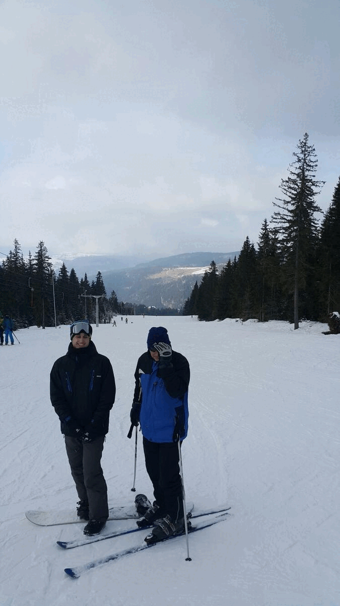
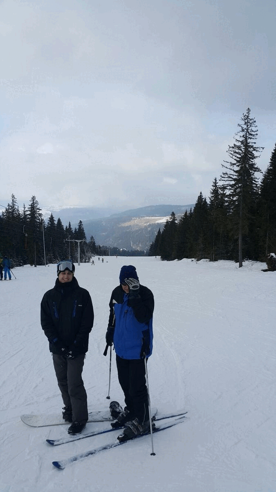
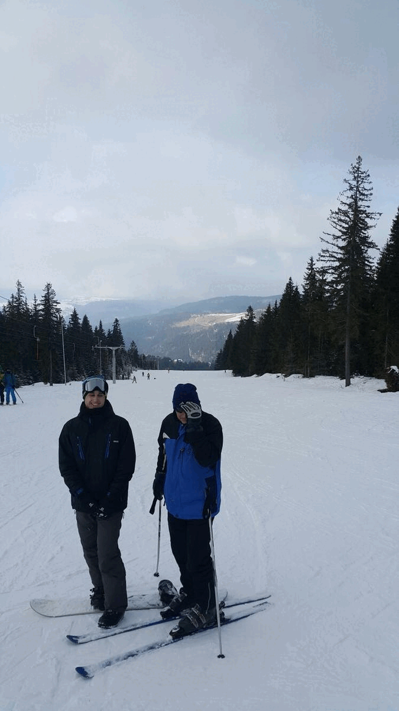

Osobni podatci
Obrazovanje
Vještine
Ostale informacije
Ime i prezime: Karlo Didak
Datum rođenja: 10.02.2001.
Spol: Muški
Mjesto rođenja: Travnik, BiH
Mjesto stanovanja: Osijek
Datum rođenja: 10.02.2001.
Spol: Muški
Mjesto rođenja: Travnik, BiH
Mjesto stanovanja: Osijek
Osnovna škola: Osnovna Škola Vitez
Srednja škola: Srednja škola "Vitez"
Fakultet: Fakultet elektrotehnike, računarstva i informacijskih tehnologija Osijek, FERIT
Srednja škola: Srednja škola "Vitez"
Fakultet: Fakultet elektrotehnike, računarstva i informacijskih tehnologija Osijek, FERIT
Kroz dosadašnje školovanje naučio sam nekoliko programskih jezika od kojih se ističu programski jezik C i Java.
Ostali programski jezici s kojim sam se susretao su: sql, c# html, css, javascript, php te kotlin.
Poznavanje rada u Visual Studio te Visual Studio Code okruženju.
Rad u MS Office-u(Word, Powerpoint, Excel).
Osnove rada u Blenderu(3D Modeliranje).
Pisanje i govor engleskog jezika(odlicno)
Neke svoje osobine koje bi izdvojio su: rado prihvacam nove izazove, spreman sam uciti i nadopuniti svoje znanje, volim raditi u timu
Ostali programski jezici s kojim sam se susretao su: sql, c# html, css, javascript, php te kotlin.
Poznavanje rada u Visual Studio te Visual Studio Code okruženju.
Rad u MS Office-u(Word, Powerpoint, Excel).
Osnove rada u Blenderu(3D Modeliranje).
Pisanje i govor engleskog jezika(odlicno)
Neke svoje osobine koje bi izdvojio su: rado prihvacam nove izazove, spreman sam uciti i nadopuniti svoje znanje, volim raditi u timu
-Hobiji:
Veliki sam ljubitelj automobila i motorsport-a(F1, WRC)
Kosarka
Brdski bickilizam
Snowboard-anje
 

Veliki sam ljubitelj automobila i motorsport-a(F1, WRC)
Kosarka
Brdski bickilizam
Snowboard-anje
